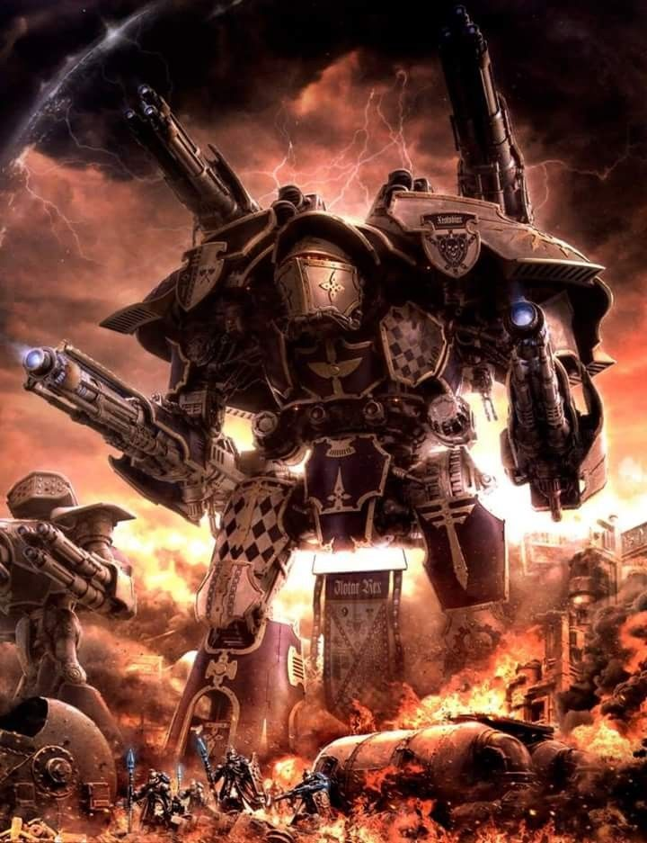
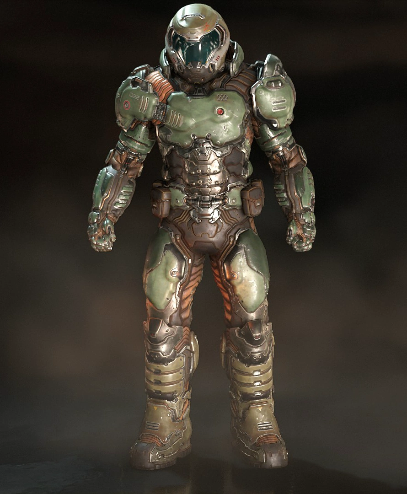
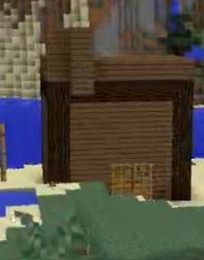

моя четвьорка ❤️

Титан класу Warlord (Воєначальник) — це один з найпотужніших і універсальних бойових мехів Імперіуму у всесвіті Warhammer 40,000.
Він є основним важким титаном, який використовується Коллегією Титаніка у Великих Домах Князів-Титанів (Legios Titanicus).
- Клас: Warlord (Воєначальник)
- Призначення: Лінійний титан, універсальна платформа для різноманітних боїв
- Розміри: ~33 метри заввишки (залежно від модифікації)
- Маса: ~400–600 тонн
- Екіпаж: Принцепс (командир), Модератій (пілот), 2–4 техножерці (обслуга)
- Озброєння: 2 основні гармати на руках + 2 допоміжні на корпусі (або ракетні установки)
- Броня: Максимально товста пласталево-керамічна броня з силовим полем (Void Shields)
- Швидкість: Повільний, але могутній (крейсерська швидкість ~30–40 км/год)
Озброєння:
- Бластер Volcano Cannon – потужний променевий важкий лазер, здатний пробивати наскрізь броню супертяжких цілей.
- Гармата Sunfury Plasma Annihilator – плазмова гармата, що завдає колосальних руйнувань по площі.
- Гатлінг-гармата Apocalypse Missile Launcher – залпова ракетна система для знищення піхоти та техніки.
- Melta Cannon – термоядерна гармата, ефективна проти броньованих цілей на близькій дистанції.
Другорядна зброя (плечі/корпус):
- Турбо-лазерні деструктори – для придушення піхоти та легких машин.
- Ракетні установки (Ursus Claws, Inferno Guns) – для залпового вогню.
- Мікроконструкторні бомбардувальники – для руйнування укріплень.
Захист:
- Void Shields – кілька шарів силових полів, що поглинають ворожі постріли.
- Adamantium-керамічна броня – витримує прямий вогонь важкої артилерії.
- Sacristans-системи ремонту – автоматичні серво-механізми для латання пробоїн.
Тактика застосування:
- Warlord виступає як основа ударного угруповання титанів, забезпечуючи вогонь підтримки та фронтальні атаки.
- Його часто супроводжують менші титани (Warhound, Reaver) та імперська піхота (Skitarrii).
- Облогові операції – руйнування фортець із дальніх дистанцій.
- Прорив ліній оборони – завдяки масі та силі вогню.
- Прикриття союзників – за рахунок силових щитів і залякуючого вигляду.

Думгай

Сакура Ізайой

ПОТУЖНА КІБІТКА